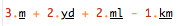
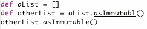
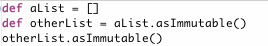
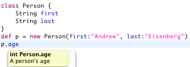

aeisenberg@vmware.com VMware Inc. |
Programs written in dynamic languages have semantics that are not fully known until they are executed. For this reason, providing semantically-aware editing support for these languages is a challenge. To address this problem, we introduce DSL Descriptors (DSLD), a DSL written in Groovy that describes the editing semantics of a Groovy DSL in a way that can be interpreted by Groovy-Eclipse. It is used to augment editor features such as content assist, search, and refactoring.
The Groovy programming language is widely used to create Domain Specific Languages (DSLs) through its highly customizable Metaobject Protocol (MOP). Frameworks such as Grails, Griffon, Spock, and Gaelyk all make heavy use of DSLs. Because of this, providing IDE tooling for these frameworks must have a semantic understanding of the DSLs in order to provide high-quality editing support.
Groovy-Eclipse is a popular tool for developing Groovy applications. One of its core components is the inferencing engine. The inferencing engine infers the types of all expressions in a Groovy script as a programmer edits and uses this information to power editing features such as content assist, search, and refactoring.
As long as metaprogramming is avoided, the inferencing can correctly determine most types. But, avoiding metaprogramming also means avoiding much of the power of Groovy. As an example of how the inferencing engine can break, consider this DSL implemented by Joachim Baumann that can be used to calculate distances:
Figure 1: distances dsl
3.m + 2.yd + 2.ml - 1.km
This DSL provides a concise, intuitive, and simple way to write programs that work with distances of various units. This
However, when using the script inside of Groovy-Eclipse, semantic underlining shows that the editor is not able to resolve the DSL:

For the rest of this paper we describe the DSL Descriptor language (DSLD), which is an Aspect-Oriented DSL written in Groovy that is interpreted by Groovy-Eclipse to provide editing support for Groovy DSLs. In next section, we touch on related techniques. Section 3 introduces DSLD by using the DSLD for the Distances DSL as an example. Section 4 describes Groovy-Eclipse's inferencing engine and architecture. Section 5 touches on details of the language, including its join point model. And section 7 concludes.
IntelliJ is another IDE that provides high quality Groovy support. It also has a DSL for describing DSLs, called GDSL. There are two major differences between the approaches. First, GDSL does not use a composable pointcut language for selecting which expressions to augment. And second, GDSL exposes internal IntelliJ APIs in scripts instead of Groovy compiler APIs, requiring familiarity with both IntelliJ and Groovy.
The ETMOP provides a way to extend the presentation of a program through a macro-like mechanism. Its capabilities are different than DSLD since the ETMOP supports non-textual extensions. However, it does not provide any mechanism for extending the edit-time program model in order to augment editor features.
The distances DSL above can be supported in DSLD like this:
contribute (currentType( subType( Number ) ) ) {
[ "m", "yd", "mi", "km" ].each { val ->
property name:val, type:"Distance"
}
}
In English, this script roughly translates to: "Whenever the type of the expression currently being evaluated is a subtype of Number, execute the block of code. At edit time only, the block contributes a list of properties with a name, and a type of Distance." The first sentence is the pointcut and the second sentence is the contribution block, both of which will be described in the DSLD language section.
Groovy-Eclipse's inferencing engine is used by the IDE to infer the types of expressions and declarations in a Groovy file. The result of inferencing is used to power IDE features like search, refactoring and content assist. It uses a visitor-requestor pattern to walk the abstract syntax tree (AST) of a Groovy file. On every expression AST node that is visited, its inferred type is calculated and an optional action may be performed. This is performed by type lookups and requestors, respectively.
As a simple example, when a method or property definition cannot be determined through the inferencing engine, it is underlined in the editor:

And when you fix the typo, the inferencing engine can now find the type of isImmutable and that fix propagates through to the next statement:

The DSLD language has two main constructs: pointcuts and contribution blocks. Pointcuts describe where type augmentation occurs, and contribution blocks describe what kind of type augmentation occurs.
The DSLD executor is implemented as a type lookup and fits in as a sub-component of the inferencing engine. On startup, or whenever a project's classpath changes, a DSLD store object discovers all DSLD files that are relevant to the project, compiles them, optimizes them, and stores them for execution during runs of the inferencing engine.
Pointcuts in DSLD pick out sets of Groovy AST expression nodes. There is a core set of primitive pointcuts, as well as the logical pointcuts and &, or | , and not ~ to combine pointcuts. All pointcuts can take an argument to refine what it matches on. The argument can be a string, class, or another pointcut.
The following list describes some of the more common pointcuts:
And this list shows some ways that pointcuts can be combined to form more sophisticated ones:
Contribution blocks describe what occurs when the pointcut matches and they are standard Groovy closure blocks. Each contribution block contains at least one contribution and may contain additional logic like if statements, loops, method calls, variables, etc. The available contributions are:
name argument, others are optionalname argument, others are optionaltype argument, others are optionalFor example:
property name:'age', type:int, doc:"A person's age"
method name:'calculateAge', params:[ageHint:int]
delegatesTo type:'com.foo.age.AgeHelper'
To associate a contribution block with a pointcut so that the block is invoked whenever the pointcut evaluates to true, you use the contribute method:
contribute (currentType("people.Person") {
property name:'age', type:int, doc:"A person's age"
}
And if the above contribution is added to a DSLD file in a Groovy project, this allows you to hover over a reference to age in the editor and get appropriate feedback:

Sometimes it is necessary to bind the result of a pointcut match so that it is available inside of a contribution block. This is possible using the special bind pointcut.
contribute (currentType(bind(runMethods : methods("run"))) {
runMethods.each {
method name: "safeRun", params: it.parameters, type: it.returnType
}
}
bind always evaluates to true and it binds the name to whatever the contained pointcut matches. In the example above, a safeRun method is added at edit time for each run method in the current type.
For consistency, bound variables will always be collections even if the pointcut matches a single object.
DSLD has a join point model as described by Masuhara and Kiczales:
Not all DSLs and language idioms are appropriate for DSLD. One example is Grails dynamic finders, which allow programmers to use dynamically generated methods based on domain class properties to query the datastore. For example, Person.findByAgeLessThanAndLastNameEquals(30,'Smith') is a valid dynamic finder. The number of these kinds of methods are approximately 2^n, where n is the number of properties in the target domain class. Since DSLD pre-computes all possible methods, it cannot be used in this situation. Instead, the Grails-IDE uses a custom Eclipse plugin to provide dynamic finder support.
We have put some effort into optimizing pointcuts. One optimization that is performed is that some pointcuts, like fileName and folder, fail fast and can disable a contribution block from ever executing during a run of the inferencing engine (i.e., an entire file). The inferencing engine also avoids inferring inside of methods and blocks that have no effect on the current operation.
However, there is still some work we can do to avoid duplicated and unnecessary work. For example, we can do more sophisticated caching of pointcut results when the filesystem has not changed.
DSLD is widely used in the Groovy eco-system. Most major Groovy libraries, including Grails, Griffon, Gradle, SwingBuilder, and Spock ship with a DSLD file to describe the DSLs that they provide. Groovy-Eclipse itself ships with a meta-DSLD to provide editing support for developers working with DSLD.
In this paper, we have shown the DSL descriptor language, that provides customized editor support for Groovy DSLs using a Groovy DSL. The join point model of DSLD allows developers to concisely describe the editing semantics of their DSL.